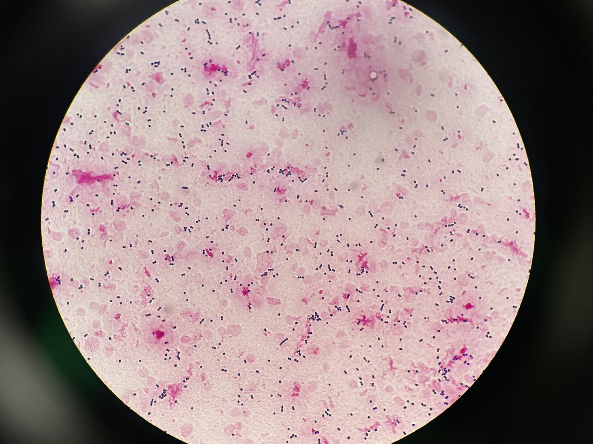
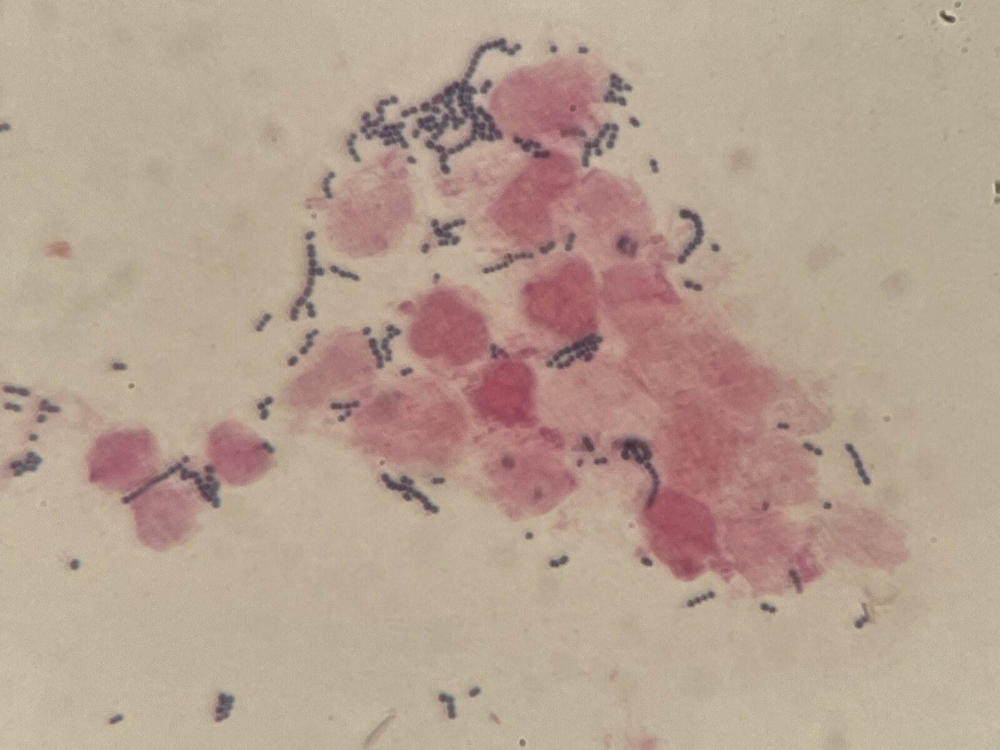

グラム染色 像 撮影：ICU関谷


分類・特徴
- グラム染色
- 陽性双球菌または連鎖状（通性嫌気性、好気・嫌気いずれでも発育）[1]
- 溶血性
- β溶血[1]
- CAMP テスト
- 陽性[1]
- Lancefield
- B 群（1933 年 Rebecca Lancefield により分類）[1]
- 定着
- 消化管・性器粘膜（妊婦の 20-30% が定着、間欠的・一過性・持続性）[1]
- 名称
- "agalactiae"（ラテン語「乳のない」）— ウシ乳腺感染で乳量低下することに由来[1]
- 莢膜
- 10 種類の莢膜多糖抗原（Ia〜IX 型）で血清型分類。莢膜は病原性の主要決定因子で、宿主白血球による取り込みと殺菌に抵抗。共通の末端シアル酸残基が補体沈着を阻害し、補体代替経路による殺菌を阻害（免疫回避）[1]
主な感染症
ひとことメモ
- UTI で GNR を想定して提出された Gram 染色で、おおぶりな GPC chain（6-8 連続）が見えたら GBS を疑う（院内検体での経験）